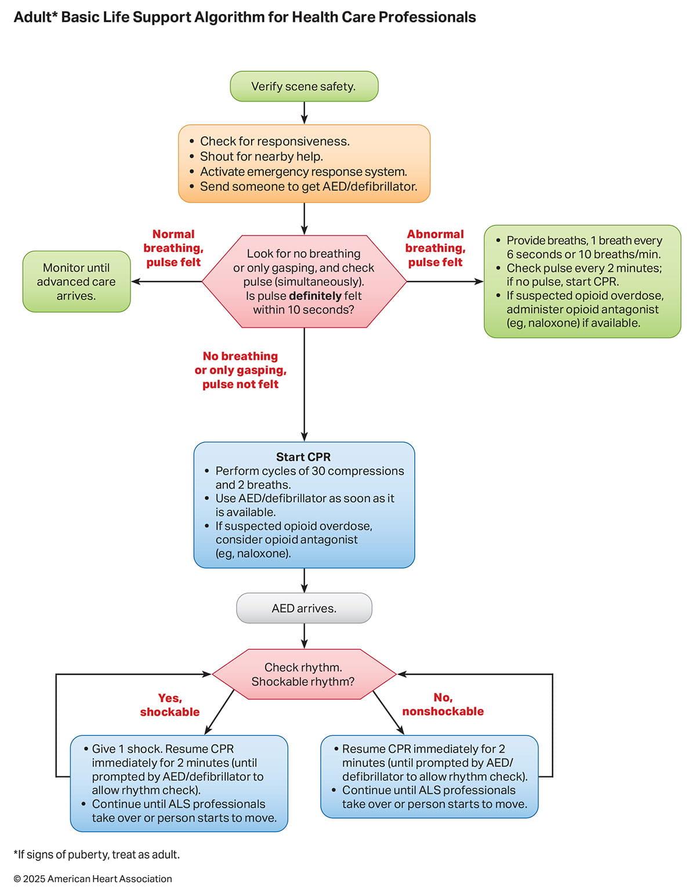
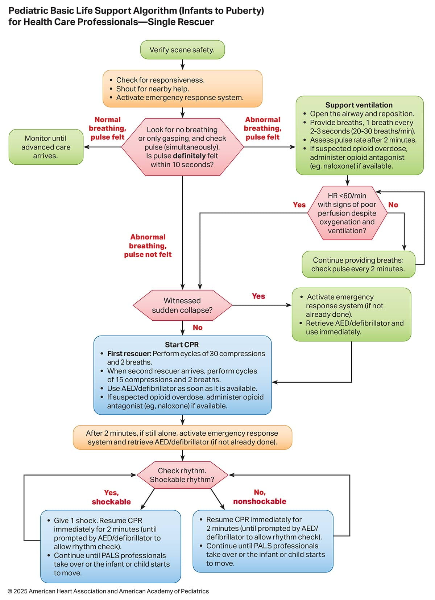
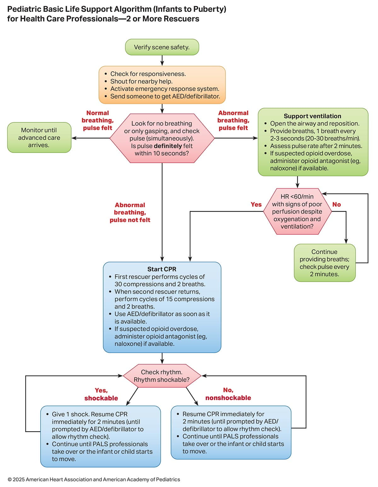
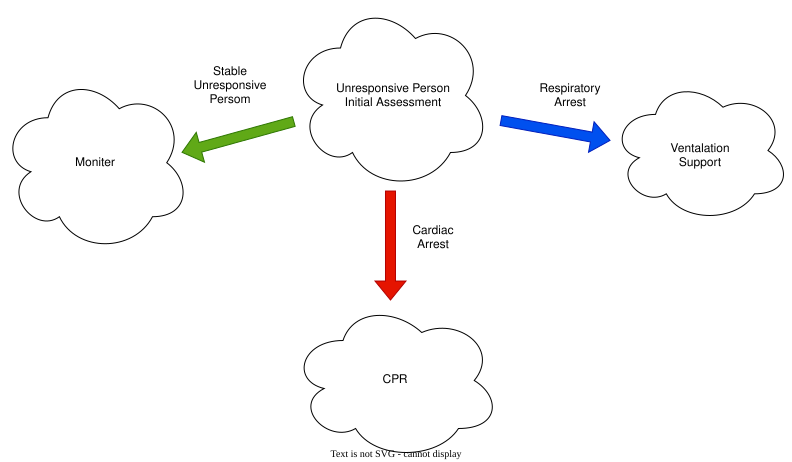
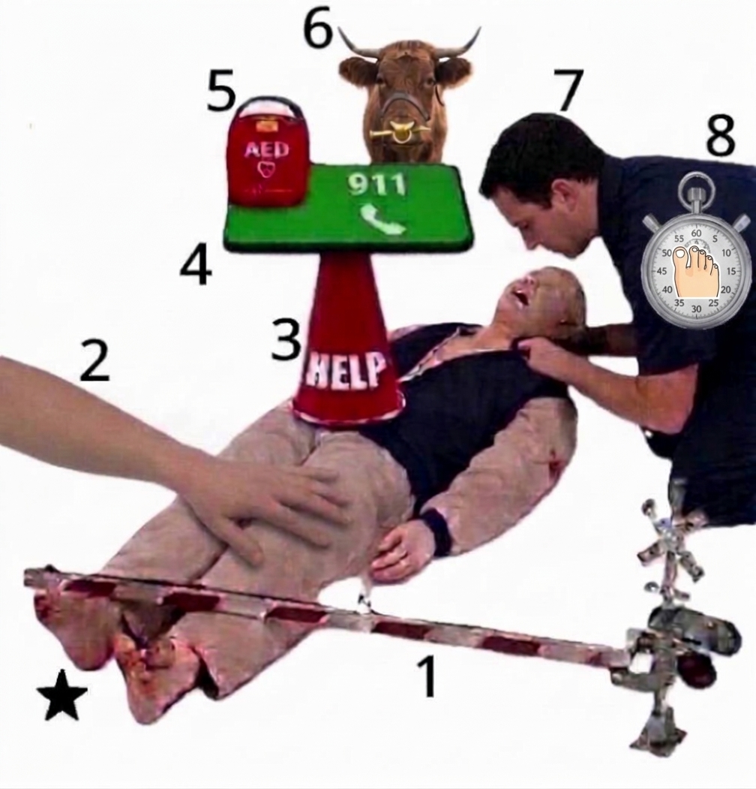
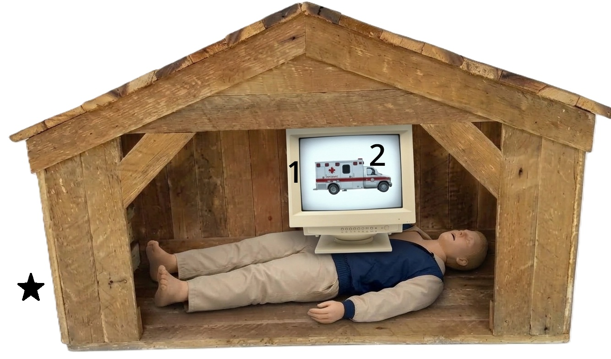

Basic Life Support
The 2025 American Heart Association Guidelines for Cardiopulmonary Resuscitation and Emergency Cardiovascular Care algorithms list the following 3 basic life support algorithms. Advanced life support and neonatal resuscitation are not covered as the intent is to cover scenerios that one might encounter in daily life such as at home or a ball park.
The age ranges for the basic life support algorithms are defined as follows:
- Pediatric: From infancy (excludes resuscitation of the newborn infant) until signs of puberty (breast development in females and presence axiallary hair in males).
- Adult: From igns of puberty and beyond (breast development in females and presence axiallary hair in males)
Management of foreign-body airway obstruction has been integrated with basic life support as cardiopulmonary resuscitation is begun if a person with a foreign-body airway obstruction becomes unresponsive. The foreign-body airway obstruction algorithms will be covered later in this website.
After reveiwing the 3 basic life support algorithms we will work throught the 5 basic concepts of memory system techniques that we preeviosly coverd to apply them to these algorithms to hopefully improve our ability to memorize them and recall them and apply them in real-world situations.
- Mind Mapping
- Visual Mnemonics
- Links
- Method of Loci
- Spaced Repetition
Unlike before we will cover the application of these memory techniques to the basic life support algorithms sequentially all on this one page.
Algorithm 1

Algorithm 2

Algorithm 3

AD
AD
1. Mind Mapping
The algorithms initially look like a 3 different complicated algorithms. However studying the algorithms revealed they each had much in common. I was able to eventually mind map all 3 to one algorithm with a main topic (unresponsive person initial assessment) and 3 main branches (stable unresponsive person, respiratoy arrest and cardiac arrest). The minor diiferences between the algorithms I will handle as I go along. Below is the initial rough mind map:

Now I need to outline the information for each branch of the mind map. As discussed before mind mapping involves simplying information and I will make notes for some of the reasons I outline the information.
Unresponsive Person - Initial Assessment
- Verify scene safety
- Check for responsiveness
- Shout for help
- Call 911 (I chose this over "Activate emergency response system" in the algorithm as it is what I actually would do. I believe if I was taking a test it would surfice for most instuctors and if not it would at least remind of the original wording.)
- Someone get an AED/defibrillator
- Someone get naloxone if feel needed (this is included also else in the algorithms but I added this as opiod overdose is rampant and I always want to consider it)
- Look for breathing and check pulse within 10 seconds
You can see in addition to simplying the wording I reduce the first three boxes of the algorithms to only one.
Stable Unresponsive Person - Monitor
- Monitor until care arrives
Respiratory Arrest - Ventalation Support
- Naloxone if possible opiod overdose (I moved this too the top to consider it while simutaneously starting the below)
- Airway
- Breaths every 6 seconds
- 3A. If pediatric breaths every 2-3 seconds
- Check pulse every 2 minutes
- Do CPR if no pulse
- 5A. If pediatric do CPR if HR < 60/min with signs of poor perfusion
Cardiac Arrest - CPR
- Naloxone if possible opiod overdose (I moved this too the top to consider it while simutaneously starting the below)
- Compressions 30
- If pediatric compressions 15 if second rescuer
- Airway
- Breaths 2
- Setup and use AED/defrillator when available
- Shockable rhythm
- Shock once
- Resume CPR
- Rhythm check after 2 minutes or prompted by AED/defrillator
- Continue until care arrives or person starts to move
- Nonshockable rhythm
- Resume CPR
- Rhythm check after 2 minutes or prompted by AED/defrillator
- Continue until care arrives or person starts to move
- Shockable rhythm
AD
AD
2&3. Visual Mnemonics & Links
Both the mental visual images and their respective links will be covered in this section by providing a composite mental visual images and their links for each branch of the mind map.

★ Unresponsive Person - Initial Assessment (subsitute image: CPR practice mannequin, this also first image og algorithm )
- Verify scene safety (subsitute image: a railway crossing gate arm coming down across the legs)
- Check for responsiveness (subsitute image: an arm and hand throwing the railway crossing gate arm up and shaking the legs "hey are you OK?)")
- Shout for help (subsitute image: a megaphone)
- Call 911 (subsitute image: a phone with 911 on the screen)
- Someone get an AED/defibrillator (subsitute image: a phone with 911 on the screen)
- Someone get naloxone if feel needed (subsitute image: an ox with a gold nail for a nasal ring)
- Look for breathing and check pulse within (subsitute image: a resucuer checking pulse and breathing) ----->
- 8. 10 (subsitute image from the major system: toes) ----->
- 9. seconds (subsitute image for seconds: a stop watch is used to represent seconds)
- 8. 10 (subsitute image from the major system: toes) ----->

★ Stable Unresponsive Person - Monitor (subsitute image: a stable with an unresponsive person lying inside)
- Monitor until (subsitute image: a computer monitor) ----->
- 2. care arrives (subsitute image: an ambulence)
★Respiratory Arrest - Ventalation Support
- Naloxone if possible opiod overdose (I moved this too the top to consider it while simutaneously starting the below)
- Airway
- Breaths every 6 seconds
- 3A. If pediatric breaths every 2-3 seconds
- Check pulse every 2 minutes
- Do CPR if no pulse
- 5A. If pediatric do CPR if HR < 60/min with signs of poor perfusion
AD
AD
images
Now look at the mental image that could be used for Adult Basic Life Support. I will outline the mental images I personally use as an example of one way it can be done but again what mental images work best for you is what you should use. This is a good time to make good visual images as many will be used in other flowcharts.
Since the Adult Basic Life Support flowchart is more complicated than the Fishing Baits flowchart to help me organize my mental images I divided the Adult Basic Life Support flowchart into what I identified as major components: Initial Assessment (includes the initial image), Stable Unresponive Adult, Respiratory Arrest and Cardical Arrest.
Before we go over the images I use there are several points I find useful:
★ It is not wrong to use your own words for items of information if it helps your recall (unless for some unusual reason the information has to be repeated word for word) as long as it conveys the original meaning of the information. An example is my use of "Call 911" instead of "Activate emergency response system". Both represent the same concept but "Call 911" is easier to make a mental image of and actually what I would say in a real life situation. Also if I was taking a recertification test and the correct multiple choice answer was "Activate emergency response system" I believe my recall of "Call 911" would lead me to chosing the correct answer.
★ Often just one mental image is all that is needed to recall a sentence of information. For example "If suspected opiod overdose, consider opiod antagonist (eg. naloxone)" just using the mental image of naloxone (An Ox with nails sticking out of hide) is enough to recall the information adequately without creating visual images of for each word in the original sentence.
★ Often when you put all your mental images together to practice you find some mental images that are hard to recall, visulize, link with other images or for some reason just don't work. This is very common so do not hesistate to replace that visual image with one that works better for you. I have several examples of my own from the above flowchart. Initially I used just an mental image of an actual AED device I had seen in person to represent "AED" but when I rehearsed my mental image links it just didn't work for me. The AEDes mosquito mental image worked well for me, probably beacuase it was so ridiculous. Also for seconds and minutes I initially used a stopwatch and grandfather clock but the seconds place trophy and minute maid orange juice was again more ridiculous and worked better for me.
★ As always use your own mental images that work best for you and when possible make them ridiculous. Sometimes you may come up with some that make you chuckle as the AEDes mosquito did me!
(You may click on blue highlighted text link for further information)
-
Initial assessment images
-
Adult Basic Life Support: The CPR practice mannequin most of us have practiced CPR on. This will also be our image to trigger our initial awareness of the flowchart and the start of it's associations.
Check scene safety: Railway crossing gate.
Check for responsiveness: Shake the mannequins shoulders shouting are you OK?.
Shout for help: Cheerleaders megaphone.
Call 911: Cell phone with 911 on the screen.
Someone get an AED/defibrilator: An Aedes mosquito (transmits Zika virus). This may be an odd image for some but it is ridiculus and fostered a stronger memory for me than a image on an actual AED did.
Look for breathing and check pulse within 10 seconds:
-
Check for breathing: An orange windsock like seen at airport runways.
Check pulse: A hand with the index and middle fingers extended in classic pulse checking gesture.
10 seconds: A traffic light. Supposidly the average time for a traffic light to change to red once the green light begins to change is less than 10 seconds.
-
-
-
Stable unresponsive adult images:
-
Stable Unresponsive Adult: A horse stable with an unresponsive person lying on their side in the hay in the recovery position.
Moniter until help arrives.
Monitor: A computer monitor.
help arrives: An ambulance.
-
-
Respiratory arrest images:
-
Respiratory arrest: A pair of deflated purple lungs in a jail cell cage.
Open airway: Airplane with an open top.
Give breaths: A fireplace bellows.
6: A shoe (major system).
seconds: A stop watch. The watch hand will be a visual image of the number of seconds. For example in adult BLS the watch hand will be a shoe (major system).
Check pulse: Two fingers, index and middle, in classic pulse checking gesture.
2: Noah [example image] (major system).
minutes: A cuckoo clock [example image]. The visual image of a number of minuteswill be whatever comes out of the door and cuckoos. For example in adult BLS will be Noah [example image] (major system)
CPR: A taxi CAB (explained under Cardiac arrest images).
no pulse: A green garden hose with knots.
Give naloxone if possible opiod overdose: Ox with nails sticking out of hide.
Respiratory resuscitation: This is basically one big visual image composed of multiple other visual images listed above. I really wanted to get this visual image to work well for me for 2 reasons. First except for several modifications I will use it again in pediatric basic life support. Second if I have the need to quickly perform respiratory resuscitation I can mentally go directly to it without transversing the entire basic life support flowchart.I started by mentally visualizing 5 blocks each with a letter lined in a row which are the upper case A,B,C,D and an ox with nails sticking out of hide sitting and leaning back against the D block. For adult BLS the blocks are concrete cinder blocks and for pediatric BLS the blocks are childrens alphabet learning blcoks so I can mentally distinguish between adult and pediatric blocks.
I really will probably remeber what A,B,C & D represent (acronym mnemonic) but just in case for adult BLS I will place a visual image of what the letter represents in the concrete cinder block opening. Then I need to add visual image modifiers to the B & C blocks to represent the how often to give breaths and check pulse and the D block to represet when to do CPR.
-
-
The A block is for "open Airway". If I forget what the A block represents I mentally look in the opening on the cinder block top and visualize an airliner with an open top inside (a ridiculous convertable airliner).
The B block is for "give Breaths". If I forget what the B block represents I mentally look in the opening on the cinder block top and visualize a fireplace bellows. For "every 6 seconds" I mentally visualize a stopwatch with a shoe for the watch hand wedge in the letter B upper open space.
The C block is for "Check pulse ___ ". If I forget what the C block represents I mentally open the C block and visulaze a hand with the index and middle fingers extended in classic pulse checking gesture inside thumping the inner walls of the block. This block is exactly the same for both adult and pediatric basic life support. Nestled inside the letter C is a bottle of minute made orange juice with Noah inside holding the two arms of the C open (2 minutes) (image).
The D block is for "Do CPR if ___". If I forget what the D block represents I mentally open the D block and visulaze a taxi CAB driving around inside crashing into the inner walls of the block.This block will differ from pediatric basic life support in when to perform CPR. For adult basic life support I visualize a coiled green garden hose with knots filling to open space of the letter D (no pulse).
The ox with nails sticking out of hide is for "Give naloxone if possible opiod overdose". This block is exactly the same for both adult and pediatric basic life support and there are no other modifiers.
★ It is important to practice what the above blocks represent before you go further. You should be able to mentally visualize the images lined up in a row and as you mentally move down the line quickly say "Open airway" | "Give breaths every 6 seconds" | "Check pulse every 2 minutes" | "Do CPR if no pulse" | "Give naloxone if possible opiod overdose". If you can foster a good recall of these you will be much more likely to perform if ever needed in an emergency when things can be stressful.
-
-
-


-
Cardiac arrest images:
-
Cardiac arrest: In the living room there is a jail cell cage and inside is an angry heart.
Give naloxone if possible opiod overdose: Ox with nails sticking out of hide.
Perform 30 compressions:
-
Perform compressions: An old fashion hand water pump.
30: Moss if using major system, a jellyfish if using shaper system, a birdie if using rhyming system.
Open airway: An open convertable top airliner.
Give 2 breaths:
-
Give breaths: A fireplace bellows.
2: Noah if using major system, a swan if using shaper system, a shoe if using rhyming system.
Use AED when available to check rhythm:
-
AED: An AEDes mosquito.
When available: A mailboxCheck rhythm: Drumsticks.
Shockable rhythm:
Shockable rhythm: A drum with an electrical outlet on its side. The drum represents rhythm and the outlet represent shockable.
-
Give 1 shock: Single lightening bolt.
Perform CPR for 2 minutes:
-
Perform CPR: A taxi CAB
for 2 minutes:
-
2: Noah if using major system, a swan if using shaper system, a shoe if using rhyming system..
minutes: A bottle of minute maid orange juice.
-
Check rhythm: Drumsticks.
Continue until help or patient moves. Ambulence with patient crawling around on top.
-
Non-shockable rhythm:
Non-shockable rhythm: A drum with an electrical outlet on its side closed with child protector outlet plugs. The drum represents rhythm and the closed outlets represent non-shockable.
-
Perform CPR for 2 minutes:
-
Perform CPR: A taxi CAB
for 2 minutes:
-
2: Noah if using major system, a swan if using shaper system, a shoe if using rhyming system..
minutes: A bottle of minute maid orange juice.
-
-
Check rhythm: Drumsticks.
Continue until help arrives or patient moves: Ambulence with patient crawling around on top.
-
-
AD
AD
Memory Palaces
In the Fish Baits example we used just one primary memory palace for the main layout of the flowchart. In the Fish Baits example on the previous pages I used rooms of my house as a memory palace. We can't reuse any of the fishing baits mental visual images but the Adult Basic Life Support flowchart is structurally simular to the Fishing Baits flow chart so I am able to use the same rooms of my house once again as a memory palace as below under primary memory palace.
There is no reason you can't use accessory memory palaces inside the primary memory palace to attach cloasely relateded information onto. In this example a did so for initial assessment, CPR, respiratory resuscitation and stable unresponsive adult for which I used a CPR mannequin, a taxi CAB, children alphabet blocks ABC and a horse stable. Each of these accessory memory palaces meet criteria for a memory palace as there are all something I am familiar with (eg. how a taxi CAB looks), have know fixed locations (eg. the hood of the taxi CAB), and have a clear sequence of order I can mentally walk through (eg. the hood to the roof to the trunk of the taxi CAB), An example would be if I was following the flow chart for respiratory resuscitation and the pulse became absent I could immedialely go to the CPR Taxi CAB interventions without having to walk through the entire flow chart.
-
Primary memory palace:
For the primary memory palace I used the rooms of my house as in the Fishing Baits example. The foyer is the starting point of the flowchart and then the flowchart branches to the left, right and straight ahead so I placed the major components of the flowchart in those locations. The left branch is the stable unresponsive adult so I placed that in the dining room to the left. The right branch is respiratory arrest so I placed that in the bedroom to the right. The straight ahead branch is cardiac arrest so I placed that in the living room straight ahead.

Figure 2
Then we can place the major components in (In Figure 3 below).

Figure 3
Finally we can fill out what we wish to be able to recall when it is time to pass a recertification test or if it is actually needed in an emergency sometime (In Figure 4 below).
Figure 4
-
Accessory memory palaces:
Initial Assessment:
Respiratory resuscitation : ABC alphabet learning blocks
CPR: A taxi CAB.
-
More recent CPR guidelines recommend compressions before airway and breaths so the ABCD acronym mnemonic as used in respiratory arrest can not be used. This newer order of interventions would be CAB (perform compressions, open airway and give breaths). A classic taxi CAB will do. The front hood has an old fashion water pump sitting on it and pumping out moss (Give 30 compressions). Alternatively you could use a jelly fish or a birdie if using the shaper system or the rhyme system for the number 30. The roof top has an open convertable top landing on top airliner that has landed on it (Open airway). The trunk has a fireplace bellow sitting on it that is being pumped by Noah (Give 2 breaths). Alternatively to pump the fireplace bellows you could use a swan or a shoe if using the shaper system or the rhyme system for the number 2. In the tail pipe of the taxi CAB is a mailbox with an open door and a AEDES mosquito stcking its head out and the mosquito has a drumstick in each of two long legs clicking the drumsticks together (Use AED when arrives to check rhythm). So now mentally walking along the taxi CAB from the front to the back we have the order of initial interventions for CPR. of course later in Making It Work! we will add the results of the rhythm check(Shockable and Non-shockable rhythm).
Stable unresponsive adult:
AD
AD
Making It Work!
-
Setting up memory the palace:
-
Let us start with the major componets in the memory palace I personaly I use (see Figure 3 above). In the foyer is the CPR practice mannequin lying ont he floor (Adult Basic Life Support). To the left in the dining room on top of the dining room table is a horse stable with a person lying on their side in the hay in the recovery position (Stable unresponsive adult). The hay is spilling out and getting all over the table and into the plates on the table. To the right on the bedroom bed is a jail cell cage with a pair of deflated purple lungs inside (Respiratory arrest). The lungs are oozing muucs that is getting on the bedspread. Straight ahead on the living room floor is an angry heart in jail cell cage (Cardiac arrest). Sitting in front of the left back door is a drum with an electrical outlet on its side (Shockable rhythm). Sitting in front of the right back door is a drum with an electrical outlet on its side closed with child protector outlet plugs (Non-hockable rhythm).
These mental images should be strongly linked to the rooms such as hay getting on the place settings or mucus on the bedspread. The reason for this is once the flowchart is in memory you do not have to go back and walk through the entire flowchart to get to a particular major component. If you need "Cardiac arrest" you can simply visualize the angry heart in the jail cell cage in the living room and proceed from there without having to recall the entire flowchart. You will find you can even start from the end of the flowchart and work your way up if you make your recall vivid.
-
Starting image/Initial assessment:
-
Now we start in the foyer (see Figure 4 above). Lying on the floor in the foyer a CPR practice mannequin (Unresponsive adult). A railway crossing gate is lowered across the mannequins neck (Check scene safety). You throw the gate off the mannequins neck and shake the mannequin shouting are you OK (Check for responsiveness). From the shaking the mannequins a cheerleaders megaphone arises out of the mannequins mouth (Shout for help). You look in the megaphone and there is a cell phone with 911 on the screen down in the magaphone circuling like water in a toilet bowl (Call 911). You hear buzzing and a suddenly a large AEDES mosquito comes out of the megaphone and purches on the edge of the megaphone (Someone get an AED/defibrilator). You look at the mosquito (Quickly) and it is waving an orange windsock in one hand (Look for breathing:) and on the end of the other arm are two large pulse checking finger (Check pulse). On the the mosquitos head is a traffic light (Within 10 seconds).
-
Stable unresponsive adult:
-
If there is normal breathing and a pulse is present it is a stable unresponsive adult (see Figure 4 above). To the left in the dining room on top of the dining room table is a horse stable with a person lying on their side in the hay in the recovery position (Stable unresponsive adult). The hay is spilling out and getting all over the table and into the plates. Next to the person is a computer monitor in the hay (Monitor) and on the screen is an ambulance going in circles with its lights flashing(until help arrives).
-
Respiratory arrest:
-
If there is abnormal breathing and a pulse is present it is respiratory arrest. To the right in the bedroom we see a pair of deflated purple lungs in a jail cell cage on the bedspread (Respiratory arrest). In front of the jail cell are the capital letter A,B,C,D blocks alphabet learning blocks (Respiratory resuscitation). We mentally go from the first block to the last block. The first block is the A block which in both adult and pediatric BLS has np modifiers (Open airway). The next block B block (Give breaths) and is modified by the upper enclosed space of the letter B being stop watch with a shoe for the stop/start button sticking up (every 6 seconds). On the C block (Check pulse) the straight vertical line of the capital C block is a cuckoo clock with a little Noah popping out saying cuckoo (every 2 minutes). The D block is actually made from a green garden hose with knots in it in the shape of a D (Do CPR if no pulse). Lying with his back against the D block is an ox with nails in it's hide (Give naloxone if possible opiod overdose).
-
Cardiac arrest:
-
Now let's move on to no breathing and no pulse, Cardiac Arrest, which is represented by an angry heart in a jail cell cage in the living room
In the jail cell cage is also an ox with nails in it's hide (Naloxone if suspected opiod overdose)trying to push the jell cell cage door open but it can't because it is blocked by a taxi CAB (Perform CPR).
As we walk down the taxi CAB from front to back on the front hood of the taxi CAB we see a old fashion hand water pump pumping out moss (Give 30 compressions). Alternatively you could use a jelly fish or a birdie if using the shaper system or the rhyme system for the number 30.
On the roof of the taxi CAB there an airplane with a open convertable top airliner that has landed on the roof (Open airway).
On the trunk of the taxi CAB is a fireplace bellows that is being pumped by Noah (Give 2 breaths). Alternatively to pump the fireplace bellows you could use a swan or a shoe if using the shaper system or the rhyme system for the number 2.
Finally in the tail pipe of the taxi CAB is a mailbox with an open door and a AEDES mosquito stcking its head out and the mosquito has a drumstick in each of two long legs clicking the drumsticks together (Use AED when arrives to check rhythm).
That completes the inital CPR flowchart. Now we have to look at the two back dorors to see the results of the rhythm check.
Shockable rhythm:
-
In front of the left back door is a drum and on its side is an electrical outlet (Shockable rhythm).
Out of the drums electrical outlet a single bolt of lightening erupts (Give 1 shock).
Slung between the 2 drums on the back door is a hammock connecting the two drums. Driving in the hammcok is a taxi CAB with a bottle of minute maid orange juice with Noah inside strapped on top of it. (Resume CPR for 2 minutes). Then two drum sticks shoot down and stick in the bottle of minute maid orange juice with Noah inside (Check rhythm ). Between the two drumsticks, which are acting like chop sticksis, is held an ambulence with a pateint crawling around on top (Continue until help arrives or the patient moves).
Non-shockable rhythm:
-
In front of the left back door is a drum and on its side is an electrical outlet closed with child protector outlet plugs (Non-shockable rhythm).
Slung between the 2 drums on the back door is a hammock connecting the two drums. Driving in the hammcok is a taxi CAB with a bottle of minute maid orange juice with Noah inside strapped on top of it. (Resume CPR for 2 minutes). Then two drum sticks shoot down and stick in the bottle of minute maid orange juice with Noah inside (Check rhythm ). Tied to one of the drumsticks is an ambulence with a pateint crawling around on top (Continue until help arrives or the patient moves).
Setting up memory the palace:
-
Let us start with the major componets in the memory palace I personaly I use (see Figure 3 above). In the foyer is the CPR practice mannequin lying ont he floor (Adult Basic Life Support). To the left in the dining room on top of the dining room table is a horse stable with a person lying on their side in the hay in the recovery position (Stable unresponsive adult). The hay is spilling out and getting all over the table and into the plates on the table. To the right on the bedroom bed is a jail cell cage with a pair of deflated purple lungs inside (Respiratory arrest). The lungs are oozing muucs that is getting on the bedspread. Straight ahead on the living room floor is an angry heart in jail cell cage (Cardiac arrest). Sitting in front of the left back door is a drum with an electrical outlet on its side (Shockable rhythm). Sitting in front of the right back door is a drum with an electrical outlet on its side closed with child protector outlet plugs (Non-hockable rhythm).
These mental images should be strongly linked to the rooms such as hay getting on the place settings or mucus on the bedspread. The reason for this is once the flowchart is in memory you do not have to go back and walk through the entire flowchart to get to a particular major component. If you need "Cardiac arrest" you can simply visualize the angry heart in the jail cell cage in the living room and proceed from there without having to recall the entire flowchart. You will find you can even start from the end of the flowchart and work your way up if you make your recall vivid.
Starting image/Initial assessment:
-
Now we start in the foyer (see Figure 4 above). Lying on the floor in the foyer a CPR practice mannequin (Unresponsive adult). A railway crossing gate is lowered across the mannequins neck (Check scene safety). You throw the gate off the mannequins neck and shake the mannequin shouting are you OK (Check for responsiveness). From the shaking the mannequins a cheerleaders megaphone arises out of the mannequins mouth (Shout for help). You look in the megaphone and there is a cell phone with 911 on the screen down in the magaphone circuling like water in a toilet bowl (Call 911). You hear buzzing and a suddenly a large AEDES mosquito comes out of the megaphone and purches on the edge of the megaphone (Someone get an AED/defibrilator). You look at the mosquito (Quickly) and it is waving an orange windsock in one hand (Look for breathing:) and on the end of the other arm are two large pulse checking finger (Check pulse). On the the mosquitos head is a traffic light (Within 10 seconds).
Stable unresponsive adult:
-
If there is normal breathing and a pulse is present it is a stable unresponsive adult (see Figure 4 above). To the left in the dining room on top of the dining room table is a horse stable with a person lying on their side in the hay in the recovery position (Stable unresponsive adult). The hay is spilling out and getting all over the table and into the plates. Next to the person is a computer monitor in the hay (Monitor) and on the screen is an ambulance going in circles with its lights flashing(until help arrives).
Respiratory arrest:
-
If there is abnormal breathing and a pulse is present it is respiratory arrest. To the right in the bedroom we see a pair of deflated purple lungs in a jail cell cage on the bedspread (Respiratory arrest). In front of the jail cell are the capital letter A,B,C,D blocks alphabet learning blocks (Respiratory resuscitation). We mentally go from the first block to the last block. The first block is the A block which in both adult and pediatric BLS has np modifiers (Open airway). The next block B block (Give breaths) and is modified by the upper enclosed space of the letter B being stop watch with a shoe for the stop/start button sticking up (every 6 seconds). On the C block (Check pulse) the straight vertical line of the capital C block is a cuckoo clock with a little Noah popping out saying cuckoo (every 2 minutes). The D block is actually made from a green garden hose with knots in it in the shape of a D (Do CPR if no pulse). Lying with his back against the D block is an ox with nails in it's hide (Give naloxone if possible opiod overdose).
Cardiac arrest:
-
Now let's move on to no breathing and no pulse, Cardiac Arrest, which is represented by an angry heart in a jail cell cage in the living room
In the jail cell cage is also an ox with nails in it's hide (Naloxone if suspected opiod overdose)trying to push the jell cell cage door open but it can't because it is blocked by a taxi CAB (Perform CPR).
As we walk down the taxi CAB from front to back on the front hood of the taxi CAB we see a old fashion hand water pump pumping out moss (Give 30 compressions). Alternatively you could use a jelly fish or a birdie if using the shaper system or the rhyme system for the number 30.
On the roof of the taxi CAB there an airplane with a open convertable top airliner that has landed on the roof (Open airway).
On the trunk of the taxi CAB is a fireplace bellows that is being pumped by Noah (Give 2 breaths). Alternatively to pump the fireplace bellows you could use a swan or a shoe if using the shaper system or the rhyme system for the number 2.
Finally in the tail pipe of the taxi CAB is a mailbox with an open door and a AEDES mosquito stcking its head out and the mosquito has a drumstick in each of two long legs clicking the drumsticks together (Use AED when arrives to check rhythm).
That completes the inital CPR flowchart. Now we have to look at the two back dorors to see the results of the rhythm check.
Shockable rhythm:
-
In front of the left back door is a drum and on its side is an electrical outlet (Shockable rhythm).
Out of the drums electrical outlet a single bolt of lightening erupts (Give 1 shock).
Slung between the 2 drums on the back door is a hammock connecting the two drums. Driving in the hammcok is a taxi CAB with a bottle of minute maid orange juice with Noah inside strapped on top of it. (Resume CPR for 2 minutes). Then two drum sticks shoot down and stick in the bottle of minute maid orange juice with Noah inside (Check rhythm ). Between the two drumsticks, which are acting like chop sticksis, is held an ambulence with a pateint crawling around on top (Continue until help arrives or the patient moves).
Non-shockable rhythm:
-
In front of the left back door is a drum and on its side is an electrical outlet closed with child protector outlet plugs (Non-shockable rhythm).
Slung between the 2 drums on the back door is a hammock connecting the two drums. Driving in the hammcok is a taxi CAB with a bottle of minute maid orange juice with Noah inside strapped on top of it. (Resume CPR for 2 minutes). Then two drum sticks shoot down and stick in the bottle of minute maid orange juice with Noah inside (Check rhythm ). Tied to one of the drumsticks is an ambulence with a pateint crawling around on top (Continue until help arrives or the patient moves).
-
AD
AD
Spaced repetition
Not static
Testing yourself with flashcards or practice tests is also a good way to reinforce the memory of the flowchart. You can make your own flashcards or use online resources. Here are some links to practice tests and videos that can help you review the Adult Basic Life Support flowchart:
AD
AD